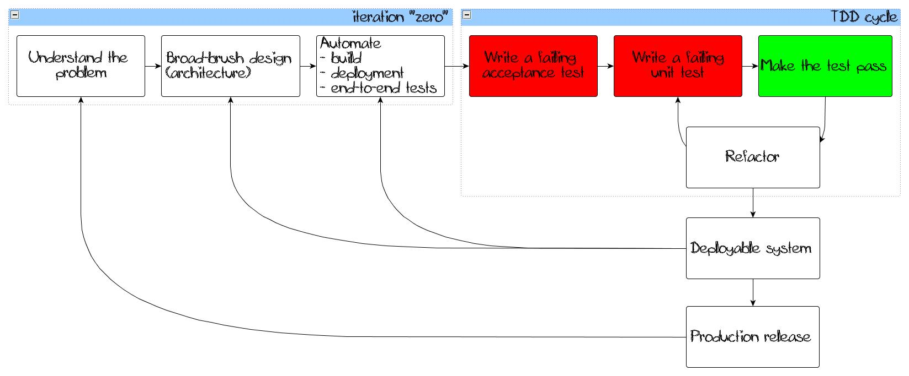
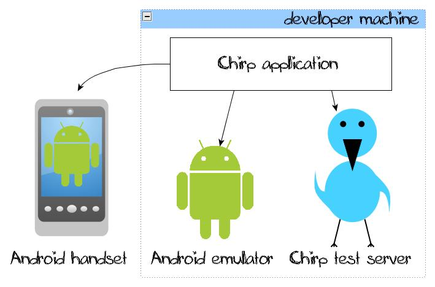
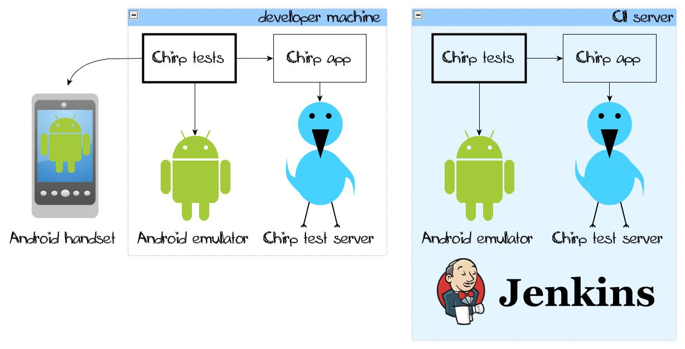
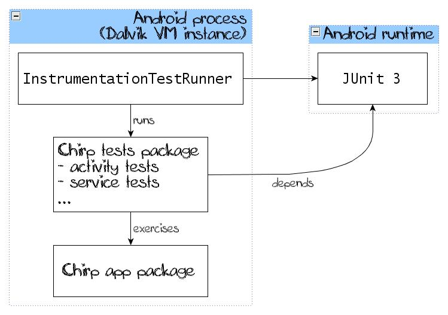
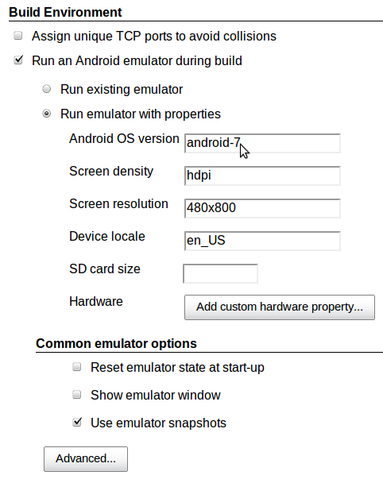
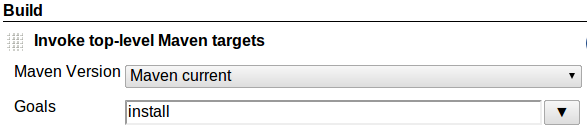
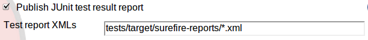

TDD and Continuous Integration with Android
Me
Groovy/Grails (sometimes Java) hacker
casual Android developer
test addicted and clean code lover
@mgryszko
marcin.gryszko@osoco.es
marcin@grysz.com
Osoco - we are...
Small but outstanding software development shop
Groovy and Grails hackers
on EC2 cloud nine
TDD mantra singers
Quality preachers
Our new gig
Chirper, new player on the microblogging scene, wants us to develop a
new
revolutionary
cutting-edge
innovative
Android client for its online service
After endless meetings, inception workshops and story writing sessions...
We coined some user stories for the first release:
- See what other chirpers are saying
- Tell the world what I have on my mind
- Follow interesting folks
- ...
We have a Chirp test server that we can fully control.
First task - implement a "walking skeleton"
implementation of the thinnest possible slice of real functionality that we can automatically build, deploy,
and test end-to-end
Growing Object Oriented Software, Guided By Tests by Steeve Freeman, Nat Pryce
original idea by Alistair Cockburn
Next steps

Source: Growing Object Oriented Software, Guided By Tests
Understand the problem
We do :)
Sketch the architecture
Architecture - hacking way

Steps to develop a functionality
- Write some code
- Test it manually in the emulator (maybe in the handset)
- Repeat the steps above
- Release the application archive (APK)
Architecture - with tests and CI
- Automated tests exercising app functions
- Continuous Integration server runs emulator and tests

Android testing support

Android testing support
- Integrated into the Android SDK
- Based on JUnit 3
- Base classes for integration and functional tests
-
Executed in the Dalvik VM == in the emulator/handset
Even a Hello World test inheriting from the junit.framework.TestCase!
-
Test suite as separate application
Two packages: application APK and test APK
Automate build and deployment
Ant
- Supported out of the box by Android SDK and Eclipse ADT
- Build file created with
android command
- Project layout as in Eclipse
-
Defines project lifecycle:
clean, compile, debug, run-tests, coverage,
release, install/uninstall
- Extreme flexibility
Maven - maven-android-plugin
- Requires additional Eclipse plugins (M2Eclipse, m2e-android)
- Powerful archetype for creating application and test projects in one step
- Maven project layout
- 3.0-alpha - same functionality as Ant (2.9 lacks code coverage calculation)
- Dependency management included
Other Maven advantages
- Undeploy before deploy - avoid stale APK versions
My personal choice: Maven
Demo
- Create application and test projects with release configuration
mvn archetype:generate -DarchetypeArtifactId=android-release -DarchetypeGroupId=de.akquinet.android.archetypes -DarchetypeVersion=1.0.6 -DgroupId=es.osoco -DartifactId=chirp -Dpackage=es.osoco.chirp
mv chirp to_remove
mv to_remove/* .
rmdir to_remove
Git tag
- before: init
- after: project_skeleton
Ant
Create application project:
android create project --target android-7 --name chirp --path chirp --activity MainActivity --package es.osoco.chirp
Create test project:
android create test-project --path chirp-tests --name chirp_test --main ../chirp
Automate deployment
$ mvn android:deploy
$ mvn android:undeploy
Automate end-to-end tests
$ mvn integration-test
Automate release
- Obtain a public-private key pair
$ keytool -genkeypair -v -alias chirprel -keyalg RSA -keysize 2048 -dname "CN=Osoco,O=Osoco,C=es" -validity 10950 -keypass chirprel -keystore chirp.keystore -storepass chirprel
Build in release mode:
Strip unused classes and methods; obfuscate (optional)
Sign with your private key
Align the final APK package
$ mvn install -Prelease -Dsign.keystore=$HOME/projects/personal/android-tdd-ci/chirp.keystore -Dsign.alias=chirprel -Dsign.storepass=chirprel -Dsign.keypass=chirprel
Jenkins build job
Emulator settings

Jenkins build job
Maven settings

Test reports configuration

Demo
- Start Jenkins
- Show installed plugins
- Show build job configuration
- Launch chirp build job
Iteration "zero" completed
Let's shoot our tracer bullet
See what other chirpers are saying aka display the timeline
Write a failing acceptance test
- HelloAndroidActivity -> TimelineActivity (and test)
- Rough sketch
timelineDriver
.waitUntilTimelineLoaded(expectedChirps().size());
assertTimelineEqualTo(timelineDriver,
expectedChirps());
Page Object (Activity Object?) pattern - timelineDriver
Implement TimelineDriver
- Chirps will be displayed in a list view
waitUntilTimelineLoaded(int timelineSize)
How do we know if the list has already N elements?
ActivityInstrumentationTestCase2 and ViewAsserts in Android SDK are rather poor...
Solution - Robotium!
- Add Solo to the test case and
TimelineDriver
Hamcrest matchers in Android tests
- We want to have expressive assertions in
assertTimelineEqualTo(List expectedTimeline)
Hamcrest doesn't work out of the box inside Android
Remove LICENCE.txt from Hamcrest jars and tweak poms
Create your own Hamcrest artifacts with Android classifier
hamcrest-core-1.1-android.jar
hamcrest-library-1.1-android.jar
hamcrest-integration-1.1-android.jar
Now let's make the test pass!
Demo
- Implement TimelineTest.test_chirps_are_displayed_timely_ordered, TimelineDriver
- Tests are falling
- Extend TimelineActivity, implement TimelineAdapter
Git tag
- before: project_skeleton
- in-between: first_acceptance_test
- after: tracer_bullet
Target hit
our very first functionality is already under test
Refactor time!
TimelineActivity
- Timeline loading should be moved to a collaborator
- Let's extract
ChirpRepository and implement it as ChirpJsonRepository
tests
- Remove duplication after implementing
ChirpJsonRepository test
Demo
- Implement ChirpJsonRepositoryTest
- Tests are falling
- Create ChirpRepository interface
- Implement ChirpRepository as ChirpJsonRepository
- before: tracer_bullet
- after: chirp_repository_extracted
Can we get rid of new operator?
RoboGuice
- = Google Guice for Android
- Some changes in our code base:
- DI configured programatically through modules
- Activities must extend from
RoboActivity
- Custom
Application class
- Injection of Views, Resources, Services...
- Less plumbing code
Demo
- Substitute chirp JSON loading in TimelineActivity by injected ChirpRepository
- Show that view and inflater injection is possible
Git tags
- before: chirp_repository_extracted
- after: roboguice_used_for_di
Next step - optimization
Don't block the activity
- Load timeline in a background thread
- Display and hide a progress dialog
We could use android.os.AsyncTask but...
How do we test it?
Our first unit test
Timeline load task
- Created by the
TimelineActivity
- Uses
ChirpReposity
- Notifies the activity when chirps are loaded
- How do we mock the repository?
JMock works out of the box with Android!
Synchronous and asynchronous task test
- Mock the repository with JMock
- Test first task worker method synchronously
- Implement lifecycle methods
- Notify the activity about completion
- Test worker + lifecycle methods asynchronously
RoboGuice has a helper classes for background tasks and their tests
Demo
- Write a simple synchronous task unit test with JMock
- Now try to execute the task without the fake UI thread
- Show how to test background tasks with RoboGuice
- Add callbacks (TimelineLoadListener)
- Extend TimelineLoadTaskTest and test callbacks
- Use callbacks in TimelineActivity for displaying/hiding the progress dialog
Git tags
- before: roboguice_used_for_di
- in-between: timeline_load_task_synchronous_test
- in-between: timeline_load_task_asynchronous_test
- after: timeline_loading_progress_dialog
Wait a second...
You told us you would write a unit test
But we have to start the emulator, generate the APK and deploy it
It's painfully slow
and unit tests should be fast as lightning
Unit tests Android way
- Executed in the Dalvik VM by the
InstrumentationTestRunner
- You need to dex, package and deploy tests
- What if we use JUnit directly?
- Dependency of
com.google.android:android-test
Result
IntellJ IDEA
java.lang.RuntimeException: Stub!
at junit.runner.BaseTestRunner.(BaseTestRunner.java:5)
Uses
android.jar from Android SDK
Command line
Running es.osoco.chirp.test.JUnitWorksTest
Tests run: 1, Failures: 0, Errors: 0, Skipped: 0, Time elapsed: 0.024 sec
Uses
junit-3.8.2.jar from Maven repository
Demo
- Execute unit tests with IntelliJ IDEA
- Execute unit tests with Maven
Git tags
- before: timeline_loading_progress_dialog
- after: junit_works_test
:(
Solution 1
Use TestNG
- Simply add Maven dependency in test scope
- IntellJ IDEA
===============================================
Custom suite
Total tests run: 1, Failures: 0, Skips: 0
===============================================
Command line
Running TestSuite
Tests run: 2, Failures: 0, Errors: 0, Skipped: 0, Time elapsed: 0.298 sec
Only classes independent of the Android API!
Demo
- Execute unit tests with IntelliJ IDEA
- Execute unit tests with Maven
- Implement DateFormatterTest and DateFormatter
Git tags
- before: junit_works_test
- in-between: testng_works_test
- after: date_formatter_testng_test
:|
Solution 2
Robolectric
Robotium ~ Selenium in web world
Robolectric ~ HtmlUnit
- Simulates Android behaviour
- Shadows of Android classes for accessing encapsulated state
- Expect some rough edges
- Chirp application - we cannot test showing and hiding of the ProgressDialog
- We could switch to the latest snaphot, but RoboGuice DI doesn't work :(
Demo
- Implement TimelineUnitTest checking the application name (trivial)
- Try to test if the timeline loading has been triggered; extract AsyncTimelineLoader interface
- Adapt integration tests
- Implement TimelineUnitTest checking if the timeline loading has been triggered (now through AsyncTimelineLoader interface)
Git tags
- before: date_formatter_testng_test
- after: timeline_unit_test
Wrap-up
Slides followed design and architectular decisions taken on a real customer project
We decided to have functional, integration and unit tests in the emulator only
Test feedback was slow
Results were more tangible
Great confidence - only visual tests of layout
You run your test in a handset
But working on the presentation and adding Robolectric...
You get very rapid feedback
Faster project start-up phase
Better design
Helps you test corner cases
But it's not a silver bullet...
Android SDK is simulated (better or worse)
Some functionality doesn't work
But it gets better and better with each release!
Choose the mix of these frameworks on project-by-project basis
Test your app end-to-end
But don't forget about unit tests!
Questions?
Thank you!
¡Gracias!
Dziękuję!
Resources - testing tools covered by this presentation
Resources - other testing tools
←
→
/
#